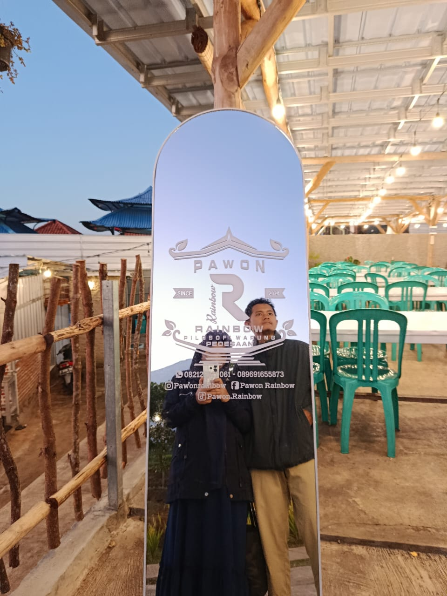
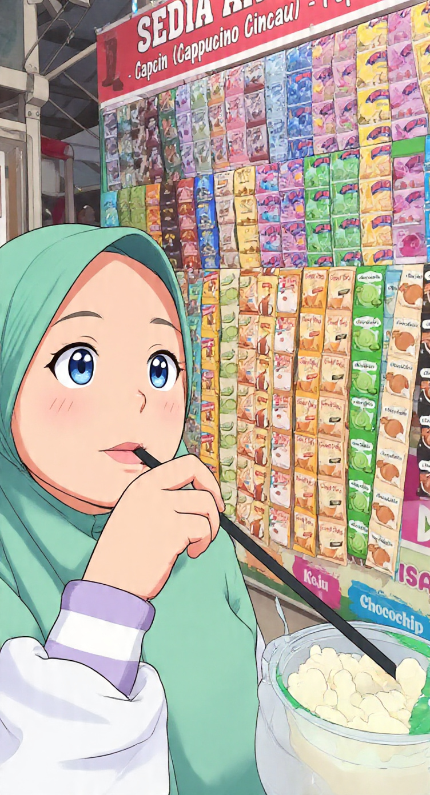

Barakallah Fii Umrik, Istriku Tercinta
27 ThSelamat ulang tahun yang ke-27, sayang. Tulisan sederhana ini adalah bentuk rasa syukur yang tak terhingga kepada Allah SWT karena telah mengirimkanmu sebagai pendamping hidupku. Terima kasih banyak karena selama ini telah dengan tulus, sabar, dan penuh kasih sayang membersamai keluarga kecil kita.
Memasuki tahun ke-6 pernikahan kita ini, aku menyadari ada begitu banyak cobaan, namun jauh lebih banyak hal-hal indah yang Allah berikan berupa berbagai macam rezeki kepada kita. Salah satu rezeki terbesar yang paling aku syukuri adalah bagaimana kita sekarang bisa lebih saling memahami dan mengerti satu sama lain. Proses mendewasa bersamamu adalah hadiah terbaik dalam hidupku.

KIta Bersama 🌸
Anak Pertama Kita ❤️Semoga di usiamu yang baru ini, Allah selalu melimpahkan kesehatan, keberkahan, kebahagiaan, serta perlindungan-Nya untukmu. Tetaplah menjadi ibu dan istri yang hebat untuk keluarga ini. Aku mencintaimu karena Allah, hari ini, esok, dan selamanya.
Suamimu